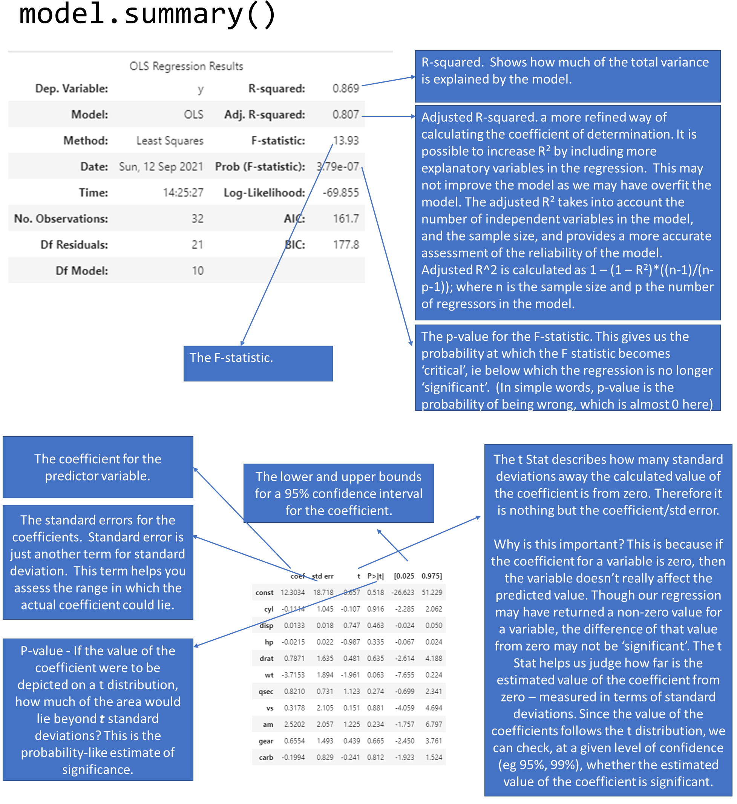
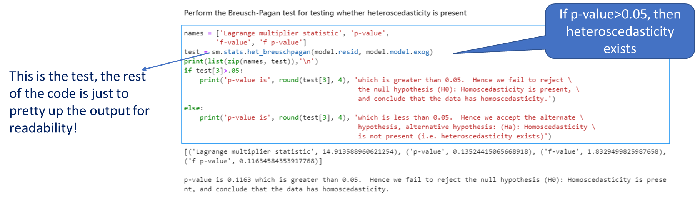
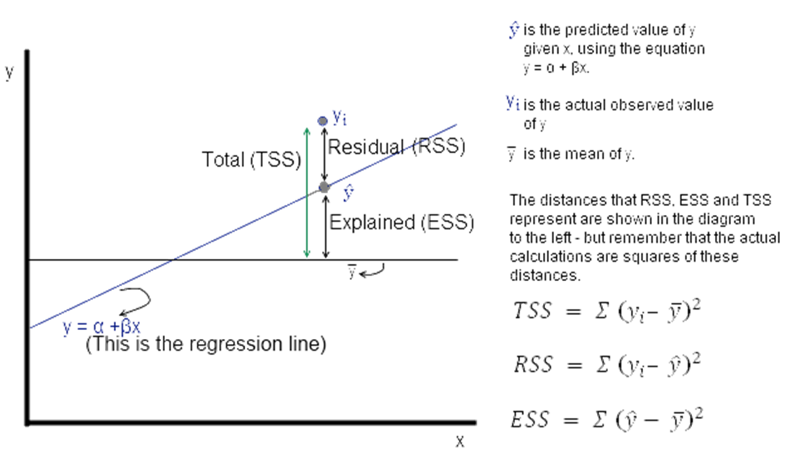
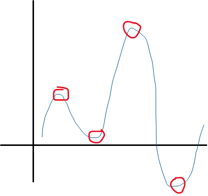
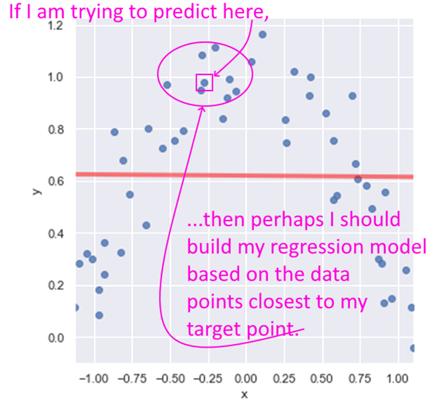
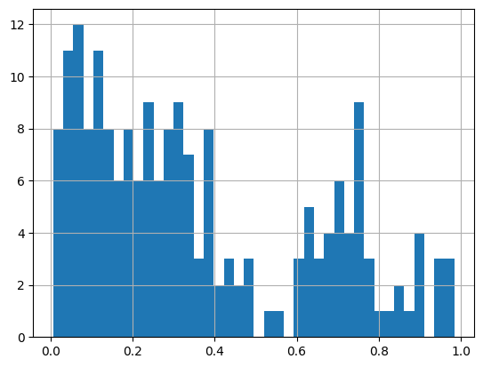
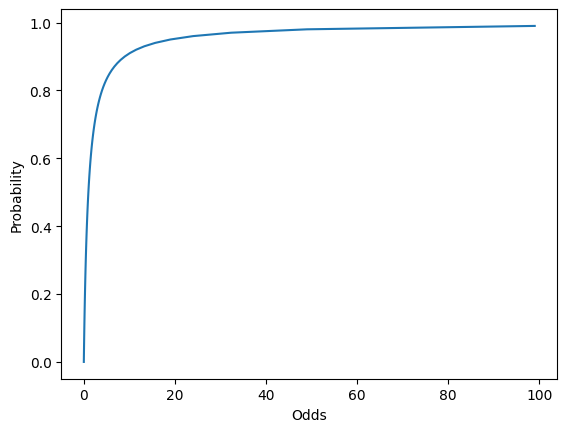
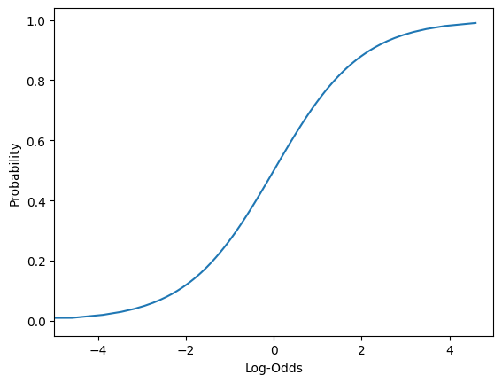
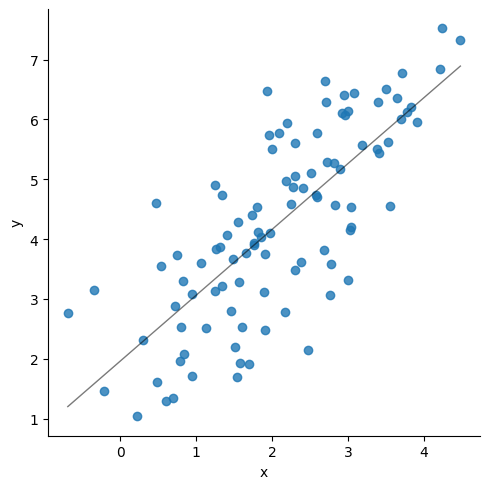

Predictive modeling involves predicting a variable of interest relating to an observation, based upon other attributes we know about that observation.
One approach to doing so is to start by specifying the structure of the model with certain numeric parameters left unspecified. These ‘unspecified parameters’ are then calculated in a way as to fit the available data as closely as possible. This general approach is called parametric modeling.
There are other approaches as well, for example with decision trees we find ever more ‘pure’ subsets by partitioning data based on the independent variables.
Linear regression belongs to the former category, ie, we specify a general model (\(y = \alpha + \beta_1 x_1 + \beta_2 x_2 + ... + \epsilon\)) and calculate the parameters (the coefficients).
The linear model assumes that the relations between variables can be summarized by a straight line.
Linear regression is used extensively in industry, finance and practically all forms of research. A huge advantage of regression models is their explainability as we can see the equations used to predict the target variable.
Univariate Regression
Regression with a single dependent variable y whose value is dependent upon the independent variable x is expressed as \(y = \alpha + \beta x + \epsilon\) where \(\alpha\) is a constant, so is \(\beta\). \(x\) is the independent variable and \(\epsilon\) is the error term (more on the error term later).
Given a set of data points, it is fairly easy to calculate alpha and beta – and while it can be done manually, it can be also be done using Excel using the SLOPE (for calculating β) and the INTERCEPT (α) functions.
If done manually, beta is calculated as:
> \(\beta\) = covariance of the two variables / variance of the independent variable
Once beta is known, alpha can be calculated as
> \(\alpha\) = mean of the dependent variable (ie \(y\)) - \(\beta\) * mean of the independent variable (ie \(x\))
Predictions
Once \(\alpha\) and \(\beta\) are known, it is probably possible to say that we can ‘predict’ \(y\) if we know the value of \(x\).
The ‘predicted’ value of \(y\) is provided to us by the regression equation. This is unlikely to be exactly equal to the actual observed value of \(y\).
The difference between the two is explained by the error term - \(\epsilon\). This is a random ‘error’ – error not in the sense of being a mistake – but in the sense that the value predicted by the regression equation is not equal to the actual observed value.
An Example
Instead of spending more time on the theory behind regression, let us jump right into an example. We have the mpg datset where we know the miles-per-gallon for a set of cars, and also other attributes related to the car such as the number of cylinders, engine size (displacement) etc.
We can try to set up a regression model where we attempt to predict the miles-per-gallon (mpg) from the rest of the columns in the dataset.
Usual library imports first
Code
import numpy as npimport matplotlib.pyplot as pltimport pandas as pdimport statsmodels.api as smimport seaborn as snsfrom scipy import statsfrom sklearn import datasetsfrom sklearn import metricsfrom sklearn.preprocessing import PolynomialFeaturesfrom sklearn.metrics import mean_squared_errorimport sklearn.preprocessing as preprocimport statsmodels.formula.api as smffrom sklearn.metrics import confusion_matrix, accuracy_score, classification_report, ConfusionMatrixDisplayfrom sklearn.metrics import mean_absolute_error, mean_squared_errorfrom sklearn.model_selection import train_test_split
13.1 OLS Regression
13.1.1 Load mtcars dataset
Consider the mtcars dataset. It has data for 32 cars, 11 variables for each.
mpg
Miles/(US) gallon
cyl
Number of cylinders
disp
Displacement (cu.in.)
hp
Gross horsepower
drat
Rear axle ratio
wt
Weight (1000 lbs)
qsec
1/4 mile time
vs
Engine (0 = V-shaped, 1 = straight)
am
Transmission (0 = auto, 1 = manual)
gear
Number of forward gears
Can we calculate miles-per-gallon (mpg) for a car based on the other variables?
Code
# Let us load the data and look at some sample columnsmtcars = sm.datasets.get_rdataset('mtcars').datamtcars.sample(4)
13.1.2 Split dataset between X (features, or predictors) and y (target)
The mpg column contains the target, or the y variable. This is the first column in our dataset. The rest of the variables will be used as predictors, or the X variables.
We want to create a model with an intercept. In Statsmodels, that requires us to use the function add_constant as shown below.
Code
y = mtcars.mpg.values# sm.add_constant adds a column to the dataframe with 1.0 as a constantfeatures = mtcars.iloc[:,1:]X = sm.add_constant(features)
# Let us check if the shape of the different dataframes is what we would expect them to beprint('Shape of the original mtcars dataset (rows x columns):', mtcars.shape)print('Shape of the X dataframe, has a new col for constant (rows x columns):', X.shape)print('Shape of the features dataframe (rows x columns):', features.shape)
Shape of the original mtcars dataset (rows x columns): (32, 11)
Shape of the X dataframe, has a new col for constant (rows x columns): (32, 11)
Shape of the features dataframe (rows x columns): (32, 10)
13.1.3 Build model and obtain summary
Code
# Now that we have defined X and y, we can easily fit a regression model to this datamodel = sm.OLS(y, X).fit()model.summary()
OLS Regression Results
Dep. Variable:
y
R-squared:
0.869
Model:
OLS
Adj. R-squared:
0.807
Method:
Least Squares
F-statistic:
13.93
Date:
Sat, 02 Mar 2024
Prob (F-statistic):
3.79e-07
Time:
11:22:20
Log-Likelihood:
-69.855
No. Observations:
32
AIC:
161.7
Df Residuals:
21
BIC:
177.8
Df Model:
10
Covariance Type:
nonrobust
coef
std err
t
P>|t|
[0.025
0.975]
const
12.3034
18.718
0.657
0.518
-26.623
51.229
cyl
-0.1114
1.045
-0.107
0.916
-2.285
2.062
disp
0.0133
0.018
0.747
0.463
-0.024
0.050
hp
-0.0215
0.022
-0.987
0.335
-0.067
0.024
drat
0.7871
1.635
0.481
0.635
-2.614
4.188
wt
-3.7153
1.894
-1.961
0.063
-7.655
0.224
qsec
0.8210
0.731
1.123
0.274
-0.699
2.341
vs
0.3178
2.105
0.151
0.881
-4.059
4.694
am
2.5202
2.057
1.225
0.234
-1.757
6.797
gear
0.6554
1.493
0.439
0.665
-2.450
3.761
carb
-0.1994
0.829
-0.241
0.812
-1.923
1.524
Omnibus:
1.907
Durbin-Watson:
1.861
Prob(Omnibus):
0.385
Jarque-Bera (JB):
1.747
Skew:
0.521
Prob(JB):
0.418
Kurtosis:
2.526
Cond. No.
1.22e+04
Notes: [1] Standard Errors assume that the covariance matrix of the errors is correctly specified. [2] The condition number is large, 1.22e+04. This might indicate that there are strong multicollinearity or other numerical problems.
At this point, the model itself is contained in an object called model.
A useful function for the t-distribution is the t function available from scipy. t.cdf gives us the area under the curve from -∞ to the value of x provided, ie it gives area under the curve (-∞, x].
The distance from 0 in terms of multiples of standard deviation tells you how far the coefficient is from zero. The farther it is, the likelier that its value is not a fluke, and it is indeed different from zero.
So the right tail is the area under the curve, but you have to multiply that by two as you need to see the area under the curve on both sides of zero.
Code
# for the 'cyl' coefficient above, the t value is (or distance from zero in terms of SD) is -0.107from scipy.stats import t t.cdf(x =-0.107, df =21) *2
0.9158046158959711
13.1.4 Use Model to Perform Predictions
Once the model is created, creating predictions is easy. We do so with the predict method on the model object we just created. In fact, this is the way we will be doing predictions for all models, not just regression.
Code
model.predict(X)
rownames
Mazda RX4 22.599506
Mazda RX4 Wag 22.111886
Datsun 710 26.250644
Hornet 4 Drive 21.237405
Hornet Sportabout 17.693434
Valiant 20.383039
Duster 360 14.386256
Merc 240D 22.496012
Merc 230 24.419090
Merc 280 18.699030
Merc 280C 19.191654
Merc 450SE 14.172162
Merc 450SL 15.599574
Merc 450SLC 15.742225
Cadillac Fleetwood 12.034013
Lincoln Continental 10.936438
Chrysler Imperial 10.493629
Fiat 128 27.772906
Honda Civic 29.896739
Toyota Corolla 29.512369
Toyota Corona 23.643103
Dodge Challenger 16.943053
AMC Javelin 17.732181
Camaro Z28 13.306022
Pontiac Firebird 16.691679
Fiat X1-9 28.293469
Porsche 914-2 26.152954
Lotus Europa 27.636273
Ford Pantera L 18.870041
Ferrari Dino 19.693828
Maserati Bora 13.941118
Volvo 142E 24.368268
dtype: float64
Code
# Let us look at what the model object prints as.# It is really a black boxmodel
<statsmodels.regression.linear_model.RegressionResultsWrapper at 0x1d059169910>
But how do we know this model is any good?
Intuition tells us that the model will be good if its predictions are close to what the actual observations are. So we can calculate the predicted values of mpg, and compare them to the actual values.
Let us do that next - we compare the actual mpg to predicted mpg.
count 32.000
mean 0.000
std 2.181
min -3.451
25% -1.604
50% -0.120
75% 1.219
max 4.627
Name: difference, dtype: float64
13.2 Assessing the regression model
Next let us look at some formal methods of assessing regression
13.2.1 Standard Error of Regression
Conceptually, the standard error of regression is the same as the standard deviation we calculated above from the differences between actual and predicted values. However, it is not mathematically pure and we have to consider the degrees of freedom to get the actual value, which we call the standard error of regression.
The standard error of regression takes into account the degrees of freedom lost due to the number of regressors in the model, and the number of observations the model is based on. It it considered a more accurate representation of the standard error of regression than the crude standard deviation calculation we did earlier.
Code
# Calculated as:model.mse_resid**.5
2.650197027865509
Code
# Also as:np.sqrt(np.sum(model.resid**2)/model.df_resid)
2.650197027865509
Code
# Also calculated directly from the model asmodel.scale**.5
2.650197027865509
model.resid is the residuals, and model.df_resid is the degrees of freedom for the model residuals
Code
print(model.resid)print('\nCount of items above = ', len(model.resid))
rownames
Mazda RX4 -1.599506
Mazda RX4 Wag -1.111886
Datsun 710 -3.450644
Hornet 4 Drive 0.162595
Hornet Sportabout 1.006566
Valiant -2.283039
Duster 360 -0.086256
Merc 240D 1.903988
Merc 230 -1.619090
Merc 280 0.500970
Merc 280C -1.391654
Merc 450SE 2.227838
Merc 450SL 1.700426
Merc 450SLC -0.542225
Cadillac Fleetwood -1.634013
Lincoln Continental -0.536438
Chrysler Imperial 4.206371
Fiat 128 4.627094
Honda Civic 0.503261
Toyota Corolla 4.387631
Toyota Corona -2.143103
Dodge Challenger -1.443053
AMC Javelin -2.532181
Camaro Z28 -0.006022
Pontiac Firebird 2.508321
Fiat X1-9 -0.993469
Porsche 914-2 -0.152954
Lotus Europa 2.763727
Ford Pantera L -3.070041
Ferrari Dino 0.006172
Maserati Bora 1.058882
Volvo 142E -2.968268
dtype: float64
Count of items above = 32
Code
model.df_resid
21.0
13.2.2 Goodness of fit, R-squared
R-squared is the square of the correlation betweeen actual and predicted values
Intuitively, we would also like to see a high correlation between predictions and observed values. We have the predicted and observed values, so calculating the R-squared is easy. (R-squared is also called coefficient of determination.)
Code
# Calculate the correlations between actual and predictedround(compare.corr(), 6)
mpg
pred
difference
mpg
1.000000
0.93221
0.361917
pred
0.932210
1.00000
-0.000000
difference
0.361917
-0.00000
1.000000
Code
# Squaring the correlations gives us the R-squared round(compare.corr()**2, 6)
mpg
pred
difference
mpg
1.000000
0.869016
0.130984
pred
0.869016
1.000000
0.000000
difference
0.130984
0.000000
1.000000
Code
# Why did we use the function `round` above?# To avoid the scientific notation and make the # results easier to read. For example, without# using the rounding we get the below result.compare.corr()**2
mpg
pred
difference
mpg
1.000000
8.690158e-01
1.309842e-01
pred
0.869016
1.000000e+00
2.538254e-27
difference
0.130984
2.538254e-27
1.000000e+00
13.2.3 Root mean squared error
The RMSE is just the square root of the average squared errors. It is the same as if we had calculated the population standard deviation based on the residuals.
RMSE is normally calculated for the test set, because for the training data we have the standard error of regression.
Let us calculate it here for the entire dataset as we did not do a train-test split for this example.
This is the average difference between the actual and the predicted values, ignoring the sign of the difference.
More Robust Evaluation: K-Fold Cross-Validation. A single train-test split can give optimistic or pessimistic results depending on the random seed. K-fold CV gives a more reliable estimate by training and evaluating on K different splits:
from sklearn.model_selection import cross_val_score, KFoldfrom sklearn.linear_model import LinearRegressionmodel_cv = LinearRegression()kf = KFold(n_splits=5, shuffle=True, random_state=42)# cross_val_score returns negative MSE by convention; negate to get positive RMSErmse_scores = (-cross_val_score(model_cv, X, y, cv=kf, scoring="neg_mean_squared_error")) **0.5print(f"RMSE: {rmse_scores.mean():.2f} +/- {rmse_scores.std():.2f}")
Code
mean_absolute_error(compare.pred, compare.mpg)
1.7227401628911079
13.2.5 Understanding the F-statistic, and its p-value
The R-squared is a key statistic for evaluating regression. But it is also a statistical quantity, which means it is an estimate around which exists a confidence interval.
Estimates follow distributions, and often we see statements such as a particular variable follows the normal or lognormal distribution. The value of R2 follows what is called an F-distribution.
The F-distribution has two parameters – the degrees of freedom for each of the two variables ESS and TSS that have gone into calculating R2. The F-distribution has a minimum of zero, and approaches zero to the right of the distribution. In order to test the significance of R2, one needs to calculate the F statistic. Then we need to find out how likely is that value of the F-stat to have been obtained by chance – lower this likelihood, the better it is.
The question arises as to how ‘significant’ is any given value of R2? Could this have been zero, and we just happened randomly to get a value of 0.86?
The F-test of overall significance is the hypothesis test for this relationship. If the overall F-test is significant, you can conclude that R-squared does not equal zero, and the correlation between the model and dependent variable is statistically significant.
To do this test, we calculate the F statistic, and its p-value. If the p-value is less than our desired level of significance (say, 5%, or 95% confidence level), then we believe the value was not arrived at by chance. This is the standard hypothesis testing piece.
\(\mbox{F-stat} = \frac{\frac{\mbox{Explained sum of squares}}{\mbox{Degrees of Freedom of the model}}}{\frac{\mbox{Residual sum of squares}}{\mbox{Degrees of Freedom fo the Residuals}}}\)
Fortunately, the F-stat, and its p-value can be easily obtained in Python, and we do not need to worry about calculations.
Code
# F stat= (explained variance) / (unexplained variance)# F stat = (ESS/DFM) / (RSS/DFE)(model.ess/model.df_model) / (np.sum(model.resid**2)/model.df_resid)
13.932463690208827
Code
# p value for F statimport scipy1-(scipy.stats.f.cdf(model.fvalue, model.df_model, model.df_resid))
3.7931521057466e-07
Code
# Getting f value directly from statsmodelsmodel.fvalue
13.932463690208827
Code
# Getting the p value of the f statistic directly from statsmodelsmodel.f_pvalue
3.7931521053058665e-07
Code
# Source: http://facweb.cs.depaul.edu/sjost/csc423/documents/f-test-reg.htm# Degrees of Freedom for Model, p-1, where p is number of regressors dfm = model.df_modeldfm
10.0
Code
# n-p, Deg Fdm for Errors, where n is number of observations, and p is number of regressorsmodel.df_resid
21.0
13.2.6 Understanding the model summary
With what we now know about R-squared, the F-statistic, and the coefficients, we can revisit our model summary that statsmodels produced for us. The below graphic explains how to read the model summary.

image.png
Significance of the Model vs Significance of the Coefficients
The model’s overall significance is judged by the value of the F-statistic.
Each individual coefficient also has a p-value, meaning individual coefficients may be statistically insignificant.
It is possible that the overall regression is significant, but none of the coefficients are. These cases can be caused by multi-collinearity, but it does not prevent us from using the predictions from the model. However it does limit our ability to definitively say which variables are the most important for our model.
If the reverse situation is true, ie the model isn’t significant but some of the variables have statistically significant coefficients, we can’t use the model.
If multi-collinearity needs to be addressed, we can do so by combining the independent variables that are correlated, eg using PCA.
For our goals of prediction in business, we are often more interested in being roughly right (and get a ‘lift’) than statistical elegance.
13.2.7 Plot the Residuals
We mentioned that the residuals, or our \(\epsilon\) term, are unexplained by the data. Which means they should not show any pattern, and should appear to be completely random. This is because any pattern should have been captured by our regression model and not show up in the residuals.
Sometimes we do see a pattern because of the way our data is, and we want to make sure that is not the case.
To check, the first thing we do is to plot the residuals. We should not be able to discern any obvious pattern in the plot. Which does not appear to be the case here.
Often when we notice a non-random pattern, this is due to heteroscedasticity (which means that the variance of the feature set is not constant). If we do notice heteroscedasticity, we may have to transform the inputs to get constant variance (eg, a logarithmic transform, or a Box-Cox transform).
The residual plot is a scatterplot of the residuals vs the fitted value (prediction). See the graphic above plotting the residuals for our miles-per-gallon model. Do you think the residuals are randomly distributed?
13.2.8 Test for Heteroscedasticity - Breusch-Pagan test
OLS regression assumes that the data comes from a population with constant variance, or homoscedasticity.
However, often that is not the case. This situation is called heteroscedasticity. This reflects itself in a pattern visible on the residual plot.
The problem with heteroscedasticity is that the confidence intervals for the regression coefficients may be understated. Which means we may consider something to be significant, when it is not.
We can address heteroscedasticity by transforming the variables (eg using the Box-Cox transformation, which is covered later in feature engineering). As a practical matter, heteroscedasticity may be difficult to identify visually from a residual plot, so we use a test for that.
The Breusch-Pagan test for heteroscedasticity is a test of hypothesis that compares two hypothesis:
H-0: Homoscedasticity is present.
H-alt: Homoscedasticity is not present.
Fortunately for us, we do not need to think too hard about the math as this is implemented for us in a function in statsmodels. The function requires two variables as inputs: model residuals, and model inputs. Once you have already created a model, these two are easy to get using model attributes.
If the p-value from the function is greater than our desired confidence, we conclude that the data has homoscedasticity.
Interpreting the test

image.png
Code
names = ['Lagrange multiplier statistic', 'p-value','f-value', 'f p-value']test = sm.stats.het_breuschpagan(model.resid, model.model.exog)print(list(zip(names, test)),'\n')if test[3]>.05:print('p-value is', round(test[3], 4), 'which is greater than 0.05. Hence we fail to reject \ the null hypothesis (H0): Homoscedasticity is present, \ and conclude that the data has homoscedasticity.')else:print('p-value is', round(test[3], 4), 'which is less than 0.05. Hence we accept the alternate \ hypothesis, alternative hypothesis: (Ha): Homoscedasticity \ is not present (i.e. heteroscedasticity exists)')
[('Lagrange multiplier statistic', 14.913588960622171), ('p-value', 0.13524415065665535), ('f-value', 1.8329499825989772), ('f p-value', 0.1163458435391346)]
p-value is 0.1163 which is greater than 0.05. Hence we fail to reject the null hypothesis (H0): Homoscedasticity is present, and conclude that the data has homoscedasticity.
13.2.9 Summarizing
To assess the quality of a regression model, look for the following: 1. The estimate of the standard error of the regression. Check how large the number is compared to the mean of the observed variable.
2. The R-squared. The closer the value of R-square is to 1, the better it is. (R-square will be a number between 0 and 1). It tells you how much of the total variance in the target variable is explained by the regression model.
3. Check for the significance of the R-squared by looking at the p-value for the F-statistic. This is a probability-like number that estimates how likely is it to have obtained the R-square value by random chance. The lower this is, the better.
4. Examine the coefficients for each of the predictor variables. Also look at the p-values for the predictors to see if they are significant.
5. Finally, have a look at a plot of the residuals.
Residual Diagnostics Quick Reference. A well-specified regression model should produce residuals that are: (1) centered around zero with no systematic bias, (2) roughly normally distributed (check with a Q-Q plot), and (3) homoscedastic — constant variance across fitted values (check with residuals vs. fitted plot). Non-random residual patterns signal a missing feature, a non-linear relationship, or a mis-specified model. Corrective actions: add interaction terms, apply a log-transform, or switch to a non-parametric approach.
13.2.10 Understanding Sums of Squares
ESS, TSS and RSS calculations
\(y_i\) is the actual observed value of the dependent variable, \(\hat{y}\) is the value of the dependent variable according to the regression line, as predicted by our regression model. What we want to get is a feel for is the variability of actual \(y\) around the regression line, ie, the volatility of \(\epsilon\). This is given by the distance \(y_i\) minus \(\hat{y}\). Represented in the figure as RSS.

image.png
Now \(\epsilon\) = observed – expected value of \(y\)
Thus, \(\epsilon = y_i - \hat{y}\). The sum of \(\epsilon\) is expected to be zero. So we look at the sum of squares:
The value of interest to us is \(= \sum {(y_i - \hat{y})^2}\). Since this value will change as the number of observations change, we divide by ‘n’ to get a ‘per observation’ number. (Since this is a square, we take the root to get a more intuitive number, ie the RMS error explained a little while earlier. Effectively, RMS gives us the standard deviation of the variation of the actual values of y when compared to the observed values.)
If \(s\) is the standard error of the regression, then \(s = \sqrt{RSS/(n – 2)}\)
(where \(n\) is the number of observations, and we subtract 2 from this to take away 2 degrees of freedom.)
0.8690157644777646
RSS 147.4944300166507
ESS 978.5527574833491
TSS 1126.0471874999998
ESS+RSS= 1126.0471874999998
F value 199.03519557441183
ESS/TSS= 0.8690157644777646
13.3 Lasso and Ridge Regression
Introduction
The setup:
We saw multinomial regression expressed as: \(y = \beta_0 + \beta_1 + \beta_2 + ... + \epsilon\)
We can combine all the \(x_n\) variables into a single array, and call it \(X\). Similarly, we can combine the \(\beta_n\) coefficients into another vector called \(\beta\).
Then the regression equation can be expressed as \(y = X\beta + \epsilon\), which is a more succinct form.
Regularization
Regularization means adding a penalty to our objective function with a view to reducing complexity. Complexity may appear in the form of:
- the number of variables in a model, and/or
- the value of the coefficients.
Why is complexity bad in models?
One reason: overfitting. Complex models tend to fit well to training data, and do not generalize well.
Another challenge with complexity in OLS regression is that the value of \(\beta\) is very sensitive to changes in X. What that means is adding a few new observations, or taking out a few can dramatically change the value of the coefficients in our vector \(\beta\).
This is because OLS will often determine coefficient values to be large numerical quantities that can fluctuate by large margins if the inputs change. So:
You have a less stable model, and
Your model likely suffers from overfitting
We address this problem by adding a penalty for coefficient values.
Modifying the objective function
In an OLS model, our objective function aims to minimize the sum of squares of the residuals. It doesn’t care about how many variables it includes in the model (a variable is considered included in a model if it has a non-zero coefficient), or what the values of the coefficients are.
But we can change our objective function to force it to consider our goals of reducing the weights. We do this by adding to our objective function a cost that is related to the values of the weights. Problem solved!
Current Objective Function: Minimize Least Squares of the Residuals
Types of regularization
Two types of regularization:
- L1 regularization—The cost added is dependent on the absolute value of the weight coefficients (the L1 norm of the weights).
- L1 norm for a vector = sum of all elements
New Objective Function = Minimize (Least Squares of the Residuals + L1_wt L1 norm for the coefficients vector)* When L1 regularization is applied, we call it Lasso Regression
L2 regularization—The cost added is dependent on the square of the value of the weight coefficients (the L2 norm of the weights).
L2 norm for a vector = sqrt of the sum of squares of all elements
New Objective Function = Minimize (Least Squares of the Residuals + \(\alpha \cdot\) L2 norm for the coefficients vector)
When L2 regularization is applied, we call it Ridge Regression
ElasticNet: Best of Both. ElasticNet combines L1 and L2 penalties and is often the best default choice when you are unsure whether sparsity (Lasso) or coefficient shrinkage (Ridge) is more appropriate:
from sklearn.linear_model import ElasticNet# alpha: overall regularization strength# l1_ratio: 0 = pure Ridge, 1 = pure Lasso, 0.5 = equal mixen = ElasticNet(alpha=0.1, l1_ratio=0.5)en.fit(X_train, y_train)
Confidence vs. Prediction Intervals. An important and often confused distinction: - Confidence interval: Range within which the mean of Y falls for a given X (uncertainty about the regression line itself) - Prediction interval: Range within which a new individual observation of Y falls (always wider — includes both uncertainty about the line and natural variability)
In statsmodels, both are available from model.get_prediction(X_new).summary_frame().
L1 and L2 norms are easily calculated using the norm function in numpy.linalg.
How to calculate L1 norm manually
Code
np.linalg.norm([2,3], 1)
5.0
Code
np.linalg.norm([-2,3], 1)
5.0
Code
# same as sum of all elements2+3
5
How to calculate L2 norm manually
Code
np.linalg.norm([2,3], 2)
3.605551275463989
Code
# same as the root of the sum of squares of the elementsnp.sqrt(2**2+3**2)
3.605551275463989
13.3.1 Lasso and Ridge regression Statsmodels
Fortunately, when doing lasso or ridge regression, we only need to specify the values of \(\alpha\) and L1_wt, and the system does the rest for us.
In the statsmodels implementation of Lasso and Ridge regression, the below function is minimized.
where RSS is the usual regression sum of squares, n is the sample size, and \(|∗|_1\) and \(|∗|_2\) are the L1 and L2 norms.
Alpha is the overall penalty weight. It can be any number (ie, not just between 0 and 1).
The L1_wt parameter decides between L1 and L2 regularization. Must be between 0 and 1 (inclusive). If 0, the fit is a ridge fit, if 1 it is a lasso fit. (Because 0 often causes a divide by 0 error, use something small like \(1e-8\).)
Example
Next, we look at an example. Here is a summary of how to use statsmodels for regularized (ridge/lasso) regression:
In statsmodels, you have to specify at least two parameters to run Lasso/Ridge regression:
alpha
L1_wt
Remember that the function minimized is \(0.5*RSS/n + alpha*((1-L1\_wt)*|params|_2^2/2 + L1\_wt*|params|_1)\)
Alpha needs to be a value different from zero
L1_wt should be a number between 0 and 1.
If L1_wt = 1, then you are doing Lasso/L1 regularization
If L1_wt = 0, then you are doing Ridge/L2 regularization (Note: in statsmodels, you can’t use L1_wt = 0, have to use a tiny non-zero number, eg 1e-8 instead)
Values between 0 and 1 weight the regularization between L1 and L2 penalties
You can run a grid-search to find the values of alpha and L1_wt that give you the best results. (Grid search means a brute force search through many parameter values.)
Notes: [1] Standard Errors assume that the covariance matrix of the errors is correctly specified. [2] The condition number is large, 1.22e+04. This might indicate that there are strong multicollinearity or other numerical problems.
Code
# Comparing coefficients between normal OLS and Regularized Regressionpd.DataFrame({'model': model.params, 'model_reg': model_reg.params})
Consider the data below. The red line is the regression line with the following attributes:
> slope=-0.004549361971974567,
> intercept=0.6205433516646912,
> rvalue=-0.009903930817224469,
> pvalue=0.9455773121019574
Clearly, not a very good fit.
But it is pretty obvious that if the line could ‘curve’ a little bit, we would get a great fit.
13.4.1 A Layman’s take on ‘Power Series Approximations’
Power series approximation allows you to express any function of \(x\) as a summation of terms with increasing powers of \(x\). Therefore any function can be approximated as:
Zero-th order estimation: \(g_0 (x) = a\)
First order estimation: \(g_1 (x) = a+bx\)
Second order estimation: \(g_2 (x) = a+bx+c x^2\)
Third order estimation: \(g_3 (x) = a+bx+c x^2+dx^3\)
And so on. Whatever is the maximum power of x in a function, it is that ‘order’ of approximation. All you have to do is to find the values of the constants \(a\), \(b\), \(c\) and \(d\) in order to get the function.

image.png
The number of ‘U-turns’ in a function’s graph plus 1 tell us the power of \(x\) in the function.
So the function above can be approximated by a 4 + 1 = 5th order function.
13.4.2 Polynomial Features Example
Polynomial regression is just OLS regression, but with polynomial features added to our \(X\) predictors. And we do that manually!! Let us see how.
We first need to ‘fit’ polynomial features to data which in our case is \(X\), and store this ‘fit’ in a variable we call, say \(p_X\). We can then transform any input to the polynomial feature set using transform().
Throughout our modeling journey, we will often see a difference between the fit and the transform methods. fit creates the mechanism, transform implements it. Sometimes these operations are combined in a single step using fit_transform(). What we do depends upon our use case.
The PolynomialFeatures function automatically inserts a constant, so if we use our \(X\) as an input, we will get the constant term twice (as we had added a constant earlier using add_constant). So we will use features instead of \(X\).
Polynomial features are powers of input features, eg for a feature vector \(x\), these could be \(x^2\),\(x^3\) etc.
Interaction features are products of independent features. For example, if \(x_1\),\(x_2\) are features, then \(x_1 \cdot x_2\) would be an example of an interaction feature.
Interaction features are useful in the case of linear models – and often used in regression. Let us move to the example.
We create a random dataframe, and try to see what the polynomial and interaction features would be.
Code
# Explaining polynomial features with a random examplefrom sklearn.preprocessing import PolynomialFeaturesimport pandas as pdimport numpy as npdata = pd.DataFrame.from_dict({'x1': np.random.randint(low=1, high=10, size=5),'x2': np.random.randint(low=1, high=10, size=5),'y': np.random.randint(low=1, high=10, size=5)})print('Dataset is:\n', data)feat = data.iloc[:,:2].copy()p = PolynomialFeatures(degree=2, interaction_only=False).fit(feat)print('\nPolynomial and Interaction Feature names are:\n', p.get_feature_names_out(feat.columns))
As mentioned earlier, polynomial regression is a form of regression analysis in which the relationship between the predictors (\(X\)) and the target variable (\(y\)) is modelled as an n-th degree polynomial in \(x\).
Polynomial regression allows us to fit a nonlinear relationship between \(X\) and \(y\).
So if we have \(x_1\) and \(x_2\) are the two predictors for \(y\), the 2nd order polynomial regression equation would look as follows:
\(y = a + b_1*x_1+b_2*x_2+ b_3*x_12+ b_4*x_22+ b_5*x_1*x_2+ \epsilon\)
The product terms towards the end are called the ‘interaction terms’.
Here is how to approach polynomial regression:
1. Decide the ‘order’ of the regression.
2. Generate the polynomial features (unfortunately Python will not do it for us, though R has a feature to just specify the polynomial order).
3. Perform a regression in a regular way, and evaluate the model.
4. Perform predictions.
13.5 LOESS Regression
LOESS stands for Locally Weighted Linear Regression. The idea behind LOESS is very similar to the idea behind k-nearest neighbors. LOESS is a non-parametric regression method that focuses on data points closest to the one being predicted.
A key decision then is how many points closest to the target to include in the regression. Another decision is if any weighting be used to give greater weight to the points closest to the target. Yet another decision is to whether use simple linear regression, or quadratic, etc.

image.png
That The statsmodels implementation of LOESS does not allow the predict method. If you need to implement predictions using LOESS, you may need to use R or another tool. Besides, the LOESS model is very similar to the k-nearest neighbors algorithm which we will cover later.is all we will cover on LOESS.
13.6 Logistic Regression
Logistic Regression is about class membership probability estimation. What that means is that it is a categorization tool, and returns probabilities. You do not use logistic regression for predicting continuous variables.
Classes are categories, and logistic regression helps us get estimates of an observation belonging to a particular class (spam/not-spam, will-respond/will-not-respond, etc). We use the same framework as for linear models, but change the objective function as to get estimates of class probabilities.
One might ask: why can’t we use normal linear regression for estimating class probabilities?
The reason for that is that normal regression gives us results that are unbounded, whereas we need to bound probabilities to be between 0 and 1. In other words, because \(f(x) = \beta_0 + \beta_0 x_1 + \beta_0 x_2 + ... + \epsilon\), \(f(x)\) is unbounded and can go from \(-\infty\) to \(+\infty\), while we need probability estimates to be between 0 and 1.
How logistic regression solves this problem?
In order to address this problem (that normal regression gives us results that are not compatible with probabilities), we apply some mathematical transformations as follows:
Instead of trying to predict probabilities, we can try to predict ‘odds’ instead, and work out the probability from the odds.
Odds are the ratio of the probabilities of an event happening vs not happening. For example, a probability of 0.5 equates to the odds of 1, a probability of 0.25 equates to odds of 0.33 etc. \(Odds = p/(1-p)\)
But odds vary from 0 to \(\infty\), which doesn’t help us.
However, if we take the log of the odds (log-odds), we get numbers that are between \(-\infty\) to \(+\infty\). We can now build a regression model to predict these log-odds.
These are the log-odds we get \(f(x)\) in our regression model to represent.
Then we can work backwards to calculate the probability.
Read the above again if it doesn’t register in one go!
Interpreting logistic regression results
What do probability estimates mean, when training data is always either 0 or 1?
If a probability of say, 0.2, is identified by the model, it means that if you take 100 items that have their class membership probability estimated to be 0.2 then about 20 will actually belong to the class.
13.6.1 Load the data
We use a public domain dataset where we need to classify individuals as being with or without diabetes. (Source: https://www.kaggle.com/uciml/pima-indians-diabetes-database)
This dataset is originally from the National Institute of Diabetes and Digestive and Kidney Diseases. The objective of the dataset is to diagnostically predict whether or not a patient has diabetes, based on certain diagnostic measurements included in the dataset. The target variable is a category, tagged as 1 or 0 in the dataset.
To approach this problem in a structured way, we will perform the following steps:
Step 1: Load the data, do some EDA
Step 2: Prepare the data, and split into train-test sets
Step 3: Fit the model
Step 4: Evaluate the model
Step 5: Use for predictions
13.6.3 Review the data
Lete us load the data, and do some initial exploration. The last column Outcome is our target variable, and the rest are features.
Code
df
Pregnancies
Glucose
BloodPressure
SkinThickness
Insulin
BMI
DiabetesPedigreeFunction
Age
Outcome
0
6
148
72
35
0
33.6
0.627
50
1
1
1
85
66
29
0
26.6
0.351
31
0
2
8
183
64
0
0
23.3
0.672
32
1
3
1
89
66
23
94
28.1
0.167
21
0
4
0
137
40
35
168
43.1
2.288
33
1
...
...
...
...
...
...
...
...
...
...
763
10
101
76
48
180
32.9
0.171
63
0
764
2
122
70
27
0
36.8
0.340
27
0
765
5
121
72
23
112
26.2
0.245
30
0
766
1
126
60
0
0
30.1
0.349
47
1
767
1
93
70
31
0
30.4
0.315
23
0
768 rows × 9 columns
Code
df.Outcome.value_counts()
Outcome
0 500
1 268
Name: count, dtype: int64
Code
df.describe()
Pregnancies
Glucose
BloodPressure
SkinThickness
Insulin
BMI
DiabetesPedigreeFunction
Age
Outcome
count
768.000000
768.000000
768.000000
768.000000
768.000000
768.000000
768.000000
768.000000
768.000000
mean
3.845052
120.894531
69.105469
20.536458
79.799479
31.992578
0.471876
33.240885
0.348958
std
3.369578
31.972618
19.355807
15.952218
115.244002
7.884160
0.331329
11.760232
0.476951
min
0.000000
0.000000
0.000000
0.000000
0.000000
0.000000
0.078000
21.000000
0.000000
25%
1.000000
99.000000
62.000000
0.000000
0.000000
27.300000
0.243750
24.000000
0.000000
50%
3.000000
117.000000
72.000000
23.000000
30.500000
32.000000
0.372500
29.000000
0.000000
75%
6.000000
140.250000
80.000000
32.000000
127.250000
36.600000
0.626250
41.000000
1.000000
max
17.000000
199.000000
122.000000
99.000000
846.000000
67.100000
2.420000
81.000000
1.000000
What we see: We notice that the mean of the different features appear to be on different scales. We also see that correlations are generally not high, which is a good thing.
13.6.4 Prepare the data, and perform a train-test split
We standardize the data (because we saw the features to have different scales, or magnitudes). Then we split it 75:25 into train and test sets.
Code
# Columns 0 to 8 are our predictors, or featuresX = df.iloc[:,:8]# Add the intercept term/constantX = sm.add_constant(X)# The last column is our y variable, the targety = df.Outcome# Now we are ready to do the train-test split 75-25, with random_state=1X_train, X_test, y_train, y_test = train_test_split(X, y, test_size=0.25, random_state=1)
13.6.5 Create a model using the Statsmodels library
Fitting the model is a one line task with Statsmodels, with a call to the function.
Code
model = sm.Logit(y_train, X_train).fit()model.summary()
Optimization terminated successfully.
Current function value: 0.474074
Iterations 6
Logit Regression Results
Dep. Variable:
Outcome
No. Observations:
576
Model:
Logit
Df Residuals:
567
Method:
MLE
Df Model:
8
Date:
Sat, 02 Mar 2024
Pseudo R-squ.:
0.2646
Time:
11:28:58
Log-Likelihood:
-273.07
converged:
True
LL-Null:
-371.29
Covariance Type:
nonrobust
LLR p-value:
3.567e-38
coef
std err
z
P>|z|
[0.025
0.975]
const
-8.1521
0.810
-10.068
0.000
-9.739
-6.565
Pregnancies
0.1181
0.037
3.230
0.001
0.046
0.190
Glucose
0.0354
0.004
8.191
0.000
0.027
0.044
BloodPressure
-0.0146
0.006
-2.543
0.011
-0.026
-0.003
SkinThickness
-0.0027
0.008
-0.336
0.737
-0.019
0.013
Insulin
-0.0007
0.001
-0.658
0.510
-0.003
0.001
BMI
0.0915
0.018
5.214
0.000
0.057
0.126
DiabetesPedigreeFunction
0.5957
0.334
1.781
0.075
-0.060
1.251
Age
0.0138
0.011
1.286
0.198
-0.007
0.035
13.6.6 Run the model on the test set, and build a confusion matrix
Review the model summary above. How is it different from the regression summary we examined earlier? How do we know the model is doing its job?
Next, we evaluate the model by studying the confusion matrix and the classification report. Below, we use a threshold of 0.50 to classify disease as 1 or 0. By moving this threshold around, you can control the instance of false positives and false negatives.
Probability Calibration. Logistic regression outputs well-calibrated probabilities (a predicted 70% means the event happens about 70% of the time). Many other classifiers (Random Forests, Gradient Boosting, SVMs) are not well-calibrated by default. Check calibration visually and correct it if needed:
from sklearn.calibration import CalibrationDisplay, CalibratedClassifierCV# Visualize calibrationCalibrationDisplay.from_estimator(model, X_test, y_test, n_bins=10)# Recalibrate a poorly calibrated model (e.g., GradientBoosting)calibrated_model = CalibratedClassifierCV(model, method="isotonic", cv=5)calibrated_model.fit(X_train, y_train)
Calibration is critical when the predicted probability will be used to make business decisions (e.g., ranking customers by churn risk).
Code
# Create predictions. Note that predictions give us probabilities, not classes!pred_prob = model.predict(X_test)# Set threshold for identifying class 1threshold =0.50# Convert probabilities to 1s and 0s based on thresholdpred = (pred_prob>threshold).astype(int)# confusion matrixcm = confusion_matrix(y_test, pred)print ("Confusion Matrix : \n", cm)# accuracy score of the modelprint('Test accuracy = ', accuracy_score(y_test, pred))
# A histogram of probabilities. Why not?pred_prob.hist(bins=40)

13.6.7 Predict a new case
Next time when a new patient comes in, you can predict with 77.6% accuracy the incidence of disease based on other things you know about them.
Use model.predict(X), where \(X\) is the vector of the attributes of the new patient.
Remember to scale \(X\) first using the preprocessing step of standardization by using the same scaler we had set up earlier (as to use the same \(\mu\) and \(\sigma\))!
We get a probability estimate of about 5.6%, which we can evaluate based on our threshold.
Code
# let us see what our original data looks likedf.sample(1)
Pregnancies
Glucose
BloodPressure
SkinThickness
Insulin
BMI
DiabetesPedigreeFunction
Age
Outcome
432
1
80
74
11
60
30.0
0.527
22
0
Code
# Also let us see what our model consumesX_test.sample(1)
const
Pregnancies
Glucose
BloodPressure
SkinThickness
Insulin
BMI
DiabetesPedigreeFunction
Age
277
1.0
0
104
64
23
116
27.8
0.454
23
Code
# Let us now create a dataframe with a new case with imaginary valuesnew_case = pd.DataFrame({'Pregnancies': [1],'Glucose':[100],'BloodPressure': [110],'SkinThickness': [40],'Insulin': [145],'BMI': [25],'DiabetesPedigreeFunction': [0.8],'Age': [52]})new_case
Pregnancies
Glucose
BloodPressure
SkinThickness
Insulin
BMI
DiabetesPedigreeFunction
Age
0
1
100
110
40
145
25
0.8
52
Code
# Our new data on which to predict looks like this: new_case = np.array(new_case).squeeze()new_case = np.insert(new_case,0, 1)new_case
13.6.9 EXTRA - Create model using the sklearn library
Code
# For running this, you need to convert all column names to be strings firstX_train.columns = [str(p) for p in X_train.columns]X_test.columns = [str(p) for p in X_test.columns]
Code
from sklearn.linear_model import LogisticRegressionlogisticRegr = LogisticRegression()logisticRegr.fit(X_train, y_train)predictions = logisticRegr.predict(X_test)# Use score method to get accuracy of modelscore = logisticRegr.score(X_test, y_test)print(score)
# Plotting Probability vs Oddsimport seaborn as snsimport matplotlib.pyplot as pltdf = pd.DataFrame({'Probability': np.arange(0,1, 0.01), \'Odds':np.arange(0,1., 0.01) /\ (1-np.arange(0,1., 0.01)) })sns.lineplot(data = df, x ='Odds', y ='Probability');

Code
# Plotting log-odds# We add a very tiny number, 1e-15 (10 to the power -15) to avoid the divide by zero error for the log functionplt.xlim(-5,5)sns.lineplot(data = df, x = np.log(df['Odds'] +1e-15), y ='Probability',)plt.xlabel("Log-Odds");

Regression Discussion Ends here
*** ## Generating correlated variables
Code
### Generating correlated variables### Specify the mean of the two variables (mean),### Then the correlation between them (corr),### and finally, the standard deviation of each of them (stdev).### Also specify the number of observations needed (size).### Update the below three linesmean = np.array([2,4])corr = np.array([.75])stdev = np.array([1, 1.5])size =100### Generate the numberscov = np.prod(stdev)*corrcov_matrix = np.array([[stdev[0]**2, cov[0]], [cov[0], stdev[1]**2]], dtype ='float')df = np.random.multivariate_normal(mean= mean, cov=cov_matrix, size=size)df = pd.DataFrame(df, columns = ['x', 'y'])# sns.scatterplot(data=df, x = df.iloc[:,0], y=df.iloc[:,1])sns.lmplot(data=df, x ="x", y="y", line_kws={"lw":1,"alpha": .5, "color":"black"}, ci=1)print('Correlation matrix\n',df.corr())print(df.describe())print('\n', stats.linregress(x = df['x'], y = df['y']))
Correlation matrix
x y
x 1.000000 0.761016
y 0.761016 1.000000
x y
count 100.000000 100.000000
mean 2.089719 4.261462
std 1.087460 1.574654
min -0.687144 1.038394
25% 1.341127 3.127999
50% 2.046680 4.176002
75% 2.904254 5.583037
max 4.476411 7.521391
LinregressResult(slope=1.1019603629813395, intercept=1.9586752461394572, rvalue=0.7610163850816325, pvalue=4.010217987867538e-20, stderr=0.09489092704985068, intercept_stderr=0.22329966742161625)

Code
### Update the below three linesmean = np.array([2,4])corr = np.array([.95])stdev = np.array([1, 1.5])size =100### Generate the numberscov = np.prod(stdev)*corrcov_matrix = np.array([[stdev[0]**2, cov[0]], [cov[0], stdev[1]**2]], dtype ='float')df = np.random.multivariate_normal(mean= mean, cov=cov_matrix, size=size)df = pd.DataFrame(df, columns = ['x', 'y'])# sns.scatterplot(data=df, x = df.iloc[:,0], y=df.iloc[:,1])sns.lmplot(data=df, x ="x", y="y", line_kws={"lw":1,"alpha": .5, "color":"black"},ci=1)print('Correlation matrix\n',df.corr())print(df.describe())print('\n', stats.linregress(x = df['x'], y = df['y']))
Correlation matrix
x y
x 1.000000 0.956126
y 0.956126 1.000000
x y
count 100.000000 100.000000
mean 1.949915 3.899637
std 0.975078 1.519397
min -0.565047 -0.426430
25% 1.225198 2.888537
50% 2.024962 3.994811
75% 2.503927 4.868860
max 3.840545 6.911640
LinregressResult(slope=1.4898649159820154, intercept=0.9945266231874772, rvalue=0.9561256680834156, pvalue=4.6887116999071444e-54, stderr=0.04611290814962349, intercept_stderr=0.10043132061014937)